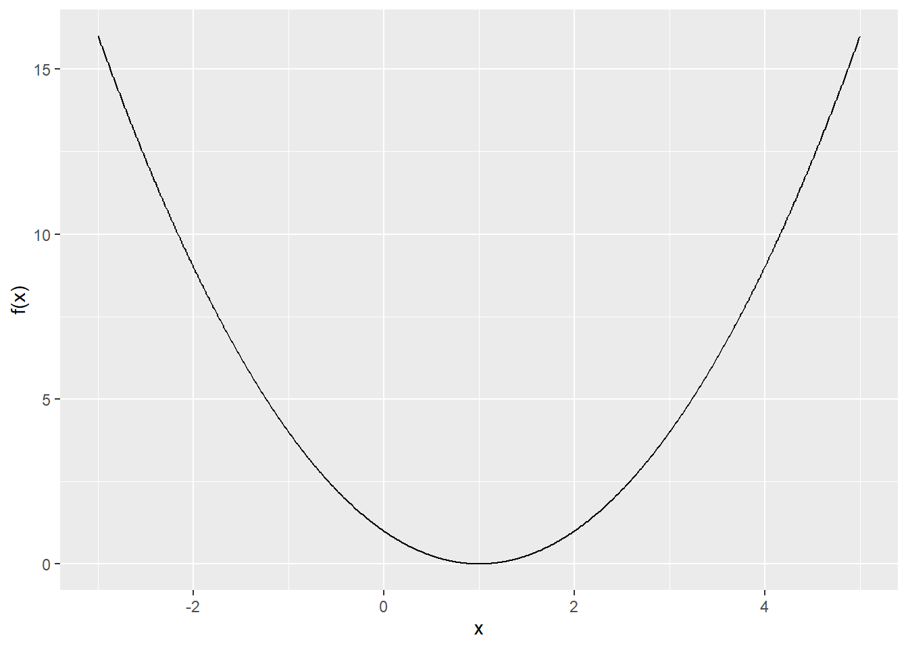
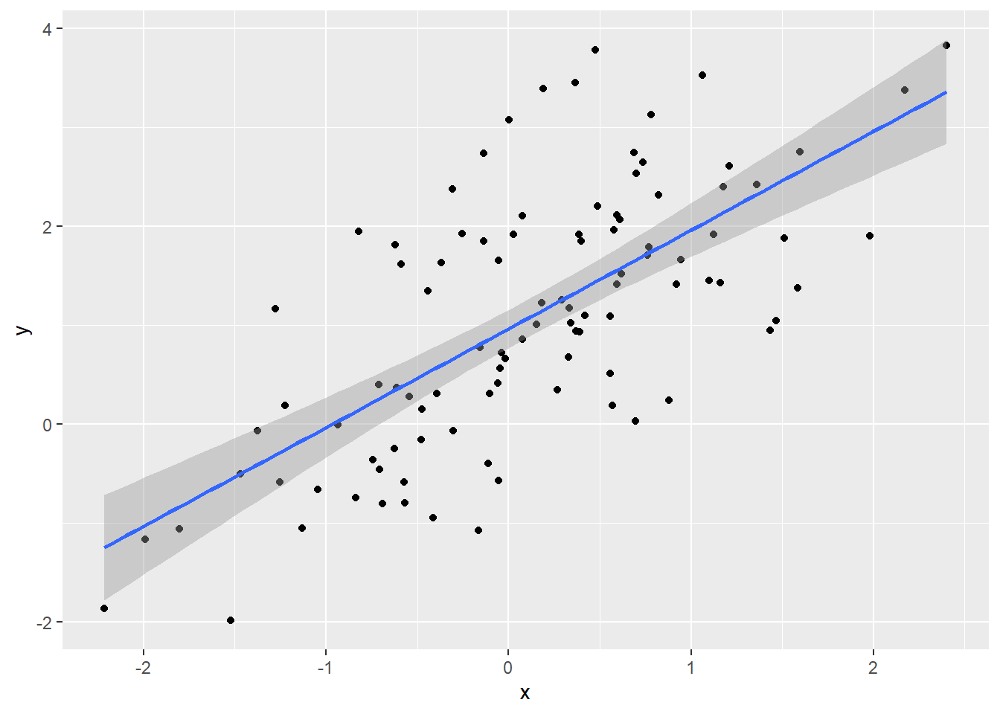

Chapter 10 Linear Regression Models
Reference: R cookbook https://rc2e.com/linearregressionandanova, any linear regression textbooks.
Packages used in this chapter:
library(tidyverse) # contains ggplot2 and dplyr
library(nycflights13) # contains the dataset "flights"
library(bestglm) # find the best subset modelRegression analysis is the study of the relationship between the responses and the covariates.
Linear regression is one of the most used statistical techniques when the response is continuous. It can be used for prediction and explain variation in the response variable.
Two types of variables:
- response = dependent variable, usually denoted by \(Y\)
- explanatory variable = independent variable = covariate = predictor = feature, usually denoted by \(X_1,\ldots,X_p\)
10.1 Simple Linear Regression
Suppose we have data \((x_1,y_1),\ldots,(x_n,y_n)\). A simple linear regression specifies that \[\begin{equation*} Y_i = \beta_0 + \beta_1 X_i + \varepsilon_i, \end{equation*}\] where \(E(\varepsilon_i) = 0\), \(Var(\varepsilon_i) = \sigma^2 > 0\), and \(\varepsilon_i\)’s are i.i.d. Taking expectation on both sides of the above equation, we see that \[\begin{equation*} E(Y|X=x) = \beta_0 + \beta_1 x. \end{equation*}\] Hence, the conditional mean of \(Y\) given \(x\) is linear in \(x\).
In the model:
- \(\beta_0\) is the intercept (mean of \(Y\) when \(x=0\))
- \(\beta_1\) is the slope (which is the change in the mean of \(Y\) for \(1\) unit increase in \(x\))
- \(\varepsilon\) is the error term (anything that is not explained by \(x\)). It is the vertical distance between \(y\) and the conditional mean \(E(Y|X=x)\).
- \(\beta_0\) and \(\beta_1\) are unknown parameters to be estimated from data
How to estimate \(\beta_0\) and \(\beta_1\)? Recall that a line can be specified by the intercept (\(\beta_0\)) and slope (\(\beta_1\)). Therefore, intuitively, we want to find a line that best fits the points. How to define the “best fit”?
Answer: Method of least square
We can minimize the residual sum of squares, which is defined by \[\begin{equation*} \sum^n_{i=1} [ y_i - (\beta_0 + \beta_1 x_i)]^2. \end{equation*}\] The least square estimator for \((\beta_0, \beta_1)\) is defined as the minimizer of the residual sum of squares. That is, \[\begin{equation*} (\hat{\beta}_0, \hat{\beta}_1) := \text{argmin}_{\beta_0, \beta_1} \sum^n_{i=1} [ y_i - (\beta_0 + \beta_1 x_i)]^2. \end{equation*}\]
The minimizer can be found by
- differentiating the objection function with respect to \(\beta_0\) and \(\beta_1\)
- setting the resulting expressions to \(0\)
- solving the simultaneous equations
The above steps lead to a closed-form formula for \((\hat{\beta}_0, \hat{\beta}_1)\) in terms of \(x\)’s and \(y\)’s, which is a special case of the formula given in Section 11.3 Multiple Linear Regression.
The residual is \(\hat{\varepsilon}_i = y_i - \hat{y}_i\), where \(\hat{y}_i = \hat{\beta}_0 + \hat{\beta}_1 x_i\).
To perform linear regression in R, we use lm().
Examples in R
Recall the dataset flights in the package nycflights13.
# y = arr_delay, x = dep_delay
lm(arr_delay ~ dep_delay, data = flights)
##
## Call:
## lm(formula = arr_delay ~ dep_delay, data = flights)
##
## Coefficients:
## (Intercept) dep_delay
## -5.899 1.019The regression equation is
\[\begin{equation*} \text{arr delay} = -5.899 + 1.019 \text{dep delay} + \varepsilon. \end{equation*}\]
From this equation, we can see that for \(1\) minute increase in departure delay, the arrival delay will increase by \(1.019\) minute on average. When there is no departure delay, the flights arrive earlier on average (a negative arrival delay means there was an early arrival).
Perform a simple linear regression without a dataset
# Example 1
lm(flights$arr_delay ~ flights$dep_delay)
##
## Call:
## lm(formula = flights$arr_delay ~ flights$dep_delay)
##
## Coefficients:
## (Intercept) flights$dep_delay
## -5.899 1.019Another example
# Example 2
set.seed(1)
x <- rnorm(100, 0, 1)
y <- 1 + x + rnorm(100, 0, 1)
lm(y ~ x)
##
## Call:
## lm(formula = y ~ x)
##
## Coefficients:
## (Intercept) x
## 0.9623 0.9989To visualize the regression line using ggplot(), use geom_smooth() and set method = lm.

To remove the confidence interval, set se = FALSE in geom_smooth().

Remark: You have seen geom_smooth() in Assignment 3.
10.2 Smoothed Conditional Means
In simple linear regression, a linear relationship between the response and predictor is assumed. In many cases, this assumption may not hold. In those situations, we may fit a curve to the data. For example, we can use geom_smooth() (without setting method = lm) to visualize the fitting of a function through the points of a scatterplot that “best represents” the relationship bewteen the response and the predictor without assuming the linear relationship.

You can see the message saying geom_smooth() is using method = "loess". loess stands for locally estimated scatterplot smoothing. You may also see “lowess”, which stands for
locally weighted scatterplot smoothing. Basically, a locally weighted regression solves a separate weighted least squares problem at each target point \(x_0\):
\[\begin{equation*}
\min_{\alpha(x_0), \beta(x_0)} \sum^n_{i=1} K_\lambda(x_0, x_i)[y_i - \alpha(x_0) - \beta(x_0) x_i]^2,
\end{equation*}\]
where \(K_\lambda(x_0, x_i) = K(|x_i-x_0|/\lambda)\) for some kernel function \(K\) and \(\lambda\) is a positive number. The estimate is \(\hat{f}(x_0) = \hat{\alpha}(x_0) + \hat{\beta}(x_0)x_0\). The idea is that data points that are close to \(x_0\) will have larger weights \(K_\lambda(x_0, x_i)\) so that the points near \(x_0\) are more important in estimating \(\alpha(x_0)\) and \(\beta(x_0)\). This is the meaning of “locally weighted”.
10.3 Multiple Linear Regression
We can add more predictors to explain the response variable better: \[\begin{equation*} y_i = \beta_0 + \beta_1 x_{i1} + \beta_2 x_{i2} + \ldots + \beta_p x_{ip} + \varepsilon_i. \end{equation*}\] Suppose we have \(n\) data, then we can use the matrix notation to represent our model: \[\begin{equation*} Y = X \beta + \varepsilon, \end{equation*}\] where \[\begin{equation*} y = \left( \begin{array}{c} y_1 \\ \vdots \\ y_n \end{array} \right), \quad X = \left( \begin{array}{cccc} 1 & x_{11} & \ldots & x_{1p}\\ 1 & \vdots & \vdots & \vdots \\ 1 & x_{n1} & \ldots & x_{np} \end{array} \right), \quad \text{and } \varepsilon = \left( \begin{array}{c} \varepsilon_1 \\ \vdots \\ \varepsilon_n \end{array} \right). \end{equation*}\] As in simple linear regression, we estimate \(\beta\) by minimizing the residual sum of squares: \[\begin{equation*} \sum^n_{i=1}(y_i - \beta_0 - \beta_1 x_{i1} - \beta_2 x_{i2} - \ldots - \beta_p x_{ip})^2. \end{equation*}\] The least square estimator for \(\beta\) is \[\begin{equation*} \hat{\beta} = (X^T X)^{-1}X^T Y. \end{equation*}\]
Examples in R
Without a dataframe:
set.seed(1)
n <- 100
x1 <- rnorm(n, 0, 1)
x2 <- rnorm(n, 0, 1)
y <- 1 + 2 * x1 + 3 * x2 + rnorm(n, 0, 1)
lm(y ~ x1 + x2)
##
## Call:
## lm(formula = y ~ x1 + x2)
##
## Coefficients:
## (Intercept) x1 x2
## 1.025 2.021 2.947With a dataframe:
new_data <- tibble(response = y, cov1 = x1, cov2 = x2)
# use the column names of your dataframe
lm(response ~ cov1 + cov2, data = new_data)
##
## Call:
## lm(formula = response ~ cov1 + cov2, data = new_data)
##
## Coefficients:
## (Intercept) cov1 cov2
## 1.025 2.021 2.947To obtain more information about the model:
# assign the model object to a variable
fit <- lm(y ~ x1 + x2)
# summary is one of the most important functions for linear regression
summary(fit)
##
## Call:
## lm(formula = y ~ x1 + x2)
##
## Residuals:
## Min 1Q Median 3Q Max
## -2.94359 -0.43645 0.00202 0.63692 2.63941
##
## Coefficients:
## Estimate Std. Error t value Pr(>|t|)
## (Intercept) 1.0254 0.1052 9.747 4.71e-16 ***
## x1 2.0211 0.1168 17.311 < 2e-16 ***
## x2 2.9465 0.1095 26.914 < 2e-16 ***
## ---
## Signif. codes: 0 '***' 0.001 '**' 0.01 '*' 0.05 '.' 0.1 ' ' 1
##
## Residual standard error: 1.043 on 97 degrees of freedom
## Multiple R-squared: 0.9134, Adjusted R-squared: 0.9116
## F-statistic: 511.6 on 2 and 97 DF, p-value: < 2.2e-16From the summary, you can find
Estimates of the regression coefficients. The \(p\)-value indicates if the regression coefficient is significantly different from \(0\). If the \(p\)-value is smaller than \(0.05\), then we reject the null hypothesis that the regression coefficient is equal to \(0\) at \(0.05\) significance level.
\(R^2\) is a measure of the variance of \(y\) that is explained by the model. The higher the \(R^2\) is, the “better” is your model. However, adding additional variables will always increase \(R^2\) while this may not improve the model in the sense that it may not improve your prediction for new data. The adjusted \(R^2\) accounts for the number of variables in the model and is a better measure of the model’s quality.
\(F\)-statistic tells you whether your model is statistically significant or not. The null hypothesis is that all coefficients are zero and the alternative hypothesis is that not all coefficients are zero.
Objects in fit
names(fit)
## [1] "coefficients" "residuals" "effects" "rank" "fitted.values" "assign" "qr" "df.residual" "xlevels"
## [10] "call" "terms" "model"Extract the coefficients
Extract the residuals
Confidence intervals for regression coefficients
confint(fit)
## 2.5 % 97.5 %
## (Intercept) 0.8165723 1.234135
## x1 1.7893884 2.252832
## x2 2.7292486 3.163818Extract all the coefficients table:
10.4 Example: diamonds
Consider the diamonds dataset in ggplot2. Let’s try to predict the price of an diamond based on its characteristics. In diamonds, cut, color and clarity are categorical features. To use them in regression, a standard way is to use the dummy coding discussed in the kNN chapter. The lm() function can handle this automatically as long as the variable is of a factor type.
# When the variable is an ordered factor, the names in the output of
# lm() are weird. So I turn them into an unordered factor first.
diamonds2 <- diamonds
diamonds2$cut <- factor(diamonds2$cut, order = FALSE)
diamonds2$clarity <- factor(diamonds2$clarity, order = FALSE)
diamonds2$color <- factor(diamonds2$color, order = FALSE)Let’s try price ~ cut. The variable cut takes \(5\) values: Fair, Good, Very Good, Premium and Ideal. Therefore, we expect to have 5 regresion coefficients (1 for intercept, 4 for cut).
fit <- lm(price ~ cut, data = diamonds2)
summary(fit)
##
## Call:
## lm(formula = price ~ cut, data = diamonds2)
##
## Residuals:
## Min 1Q Median 3Q Max
## -4258 -2741 -1494 1360 15348
##
## Coefficients:
## Estimate Std. Error t value Pr(>|t|)
## (Intercept) 4358.76 98.79 44.122 < 2e-16 ***
## cutGood -429.89 113.85 -3.776 0.000160 ***
## cutVery Good -377.00 105.16 -3.585 0.000338 ***
## cutPremium 225.50 104.40 2.160 0.030772 *
## cutIdeal -901.22 102.41 -8.800 < 2e-16 ***
## ---
## Signif. codes: 0 '***' 0.001 '**' 0.01 '*' 0.05 '.' 0.1 ' ' 1
##
## Residual standard error: 3964 on 53935 degrees of freedom
## Multiple R-squared: 0.01286, Adjusted R-squared: 0.01279
## F-statistic: 175.7 on 4 and 53935 DF, p-value: < 2.2e-16From the output, we see that we have \(4\) additional predictors named cutGood, cutVery Good, cutPremium and cutIdeal corresponding to the values cut can take. We do not see cutFair because the value fair has been used as the baseline for the regression model. That means if cut is fair, then the mean price is just the intercept value. If cut is Good, then the mean price is \(4358.76-429.89.\)
The results for the regression coefficients do not make sense because they imply that diamonds with ideal cut are the cheapest on average. The problem is that we have not “controlled for other variables”. The meaning of “control for other variables” is that we should also put in other relevant variables so that the interpretation of the regression coefficients will make sense. For example, if we include carat, then the interpretation of the regression coefficient for cutGood is that fixing the weight of the diamond, diamonds with good cut is how much more expensive than diamonds with fair cut on average (because the baseline value is fair).
Now, let’s try to add carat.
fit <- lm(price ~ cut + carat, data = diamonds2)
summary(fit)
##
## Call:
## lm(formula = price ~ cut + carat, data = diamonds2)
##
## Residuals:
## Min 1Q Median 3Q Max
## -17540.7 -791.6 -37.6 522.1 12721.4
##
## Coefficients:
## Estimate Std. Error t value Pr(>|t|)
## (Intercept) -3875.47 40.41 -95.91 <2e-16 ***
## cutGood 1120.33 43.50 25.75 <2e-16 ***
## cutVery Good 1510.14 40.24 37.53 <2e-16 ***
## cutPremium 1439.08 39.87 36.10 <2e-16 ***
## cutIdeal 1800.92 39.34 45.77 <2e-16 ***
## carat 7871.08 13.98 563.04 <2e-16 ***
## ---
## Signif. codes: 0 '***' 0.001 '**' 0.01 '*' 0.05 '.' 0.1 ' ' 1
##
## Residual standard error: 1511 on 53934 degrees of freedom
## Multiple R-squared: 0.8565, Adjusted R-squared: 0.8565
## F-statistic: 6.437e+04 on 5 and 53934 DF, p-value: < 2.2e-16It makes more sense now although the coefficient of cutVery good is still higher than that of cutPremium.
We now add clarity and color.
fit <- lm(price ~ cut + carat + clarity + color, data = diamonds2)
summary(fit)
##
## Call:
## lm(formula = price ~ cut + carat + clarity + color, data = diamonds2)
##
## Residuals:
## Min 1Q Median 3Q Max
## -16813.5 -680.4 -197.6 466.4 10394.9
##
## Coefficients:
## Estimate Std. Error t value Pr(>|t|)
## (Intercept) -7362.80 51.68 -142.46 <2e-16 ***
## cutGood 655.77 33.63 19.50 <2e-16 ***
## cutVery Good 848.72 31.28 27.14 <2e-16 ***
## cutPremium 869.40 30.93 28.11 <2e-16 ***
## cutIdeal 998.25 30.66 32.56 <2e-16 ***
## carat 8886.13 12.03 738.44 <2e-16 ***
## claritySI2 2625.95 44.79 58.63 <2e-16 ***
## claritySI1 3573.69 44.60 80.13 <2e-16 ***
## clarityVS2 4217.83 44.84 94.06 <2e-16 ***
## clarityVS1 4534.88 45.54 99.59 <2e-16 ***
## clarityVVS2 4967.20 46.89 105.93 <2e-16 ***
## clarityVVS1 5072.03 48.21 105.20 <2e-16 ***
## clarityIF 5419.65 52.14 103.95 <2e-16 ***
## colorE -211.68 18.32 -11.56 <2e-16 ***
## colorF -303.31 18.51 -16.39 <2e-16 ***
## colorG -506.20 18.12 -27.93 <2e-16 ***
## colorH -978.70 19.27 -50.78 <2e-16 ***
## colorI -1440.30 21.65 -66.54 <2e-16 ***
## colorJ -2325.22 26.72 -87.01 <2e-16 ***
## ---
## Signif. codes: 0 '***' 0.001 '**' 0.01 '*' 0.05 '.' 0.1 ' ' 1
##
## Residual standard error: 1157 on 53921 degrees of freedom
## Multiple R-squared: 0.9159, Adjusted R-squared: 0.9159
## F-statistic: 3.264e+04 on 18 and 53921 DF, p-value: < 2.2e-16Now, in terms of the relative magnitude, all the regression coefficients make sense. Note that the baseline value of color is D (which is the best) so that any other colors should have negative coefficients. For cut and clarity, the baseline values are the worst so that the other variables should have positive coefficients.
10.6 Compare models using ANOVA
If you want to compare if the difference between two models are statistically significant or not, you can use anova(). When you compare two models using anova(), one model must be contained within the other.
set.seed(100)
n <- 100
x1 <- rnorm(n, 0, 1)
x2 <- rnorm(n, 0, 1)
x3 <- rnorm(n, 0, 1)
x4 <- rnorm(n, 0, 1)
y <- 1 + 2 * x1 + 3 * x2 + rnorm(n, 0, 1)
m1 <- lm(y ~ x1)
m2 <- lm(y ~ x1 + x2)
m3 <- lm(y ~ x1 + x2 + x3)
m4 <- lm(y ~ x1 + x2 + x3 + x4)m1 is contained within m2, m2 is contained within m3, and m3 is contained within m4.
Compare m1 and m2:
anova(m1, m2)
## Analysis of Variance Table
##
## Model 1: y ~ x1
## Model 2: y ~ x1 + x2
## Res.Df RSS Df Sum of Sq F Pr(>F)
## 1 98 618.26
## 2 97 112.56 1 505.7 435.79 < 2.2e-16 ***
## ---
## Signif. codes: 0 '***' 0.001 '**' 0.01 '*' 0.05 '.' 0.1 ' ' 1The difference is statistically significant, implying x2 should be necessary.
Compare m2 and m4:
anova(m2, m4)
## Analysis of Variance Table
##
## Model 1: y ~ x1 + x2
## Model 2: y ~ x1 + x2 + x3 + x4
## Res.Df RSS Df Sum of Sq F Pr(>F)
## 1 97 112.56
## 2 95 110.16 2 2.4024 1.0359 0.3589The difference is not statistically significant, implying x3 and x4 may not be necessary.
Compare m3 and m4:
anova(m3, m4)
## Analysis of Variance Table
##
## Model 1: y ~ x1 + x2 + x3
## Model 2: y ~ x1 + x2 + x3 + x4
## Res.Df RSS Df Sum of Sq F Pr(>F)
## 1 96 110.78
## 2 95 110.16 1 0.61992 0.5346 0.4665The difference is not statistically significant, implying x4 may not be necessary.
10.7 Prediction
Let’s use the flights dataset again.
set.seed(1)
random_index <- sample(nrow(flights), size = nrow(flights) * 0.7)
flights_train <- flights[random_index, ]
flights_test <- flights[-random_index, ]
fit <- lm(arr_delay ~ dep_delay, data = flights_train)Prediction
Since the response is continuous, we cannot use “accuracy” to measure the performance of our prediction. One possible measure is to use correlation. The higher the correlation, the better the prediction.
Since there are missing values, we set use = "complete.obs".
10.8 Interaction Terms
When the effect on the response of one predictor variable depends the levels or values of the other predictor variables, we can include interaction terms. For example, if we have two predictors \(X_1\) and \(X_2\), we can include an additional interaction term \(X_1 X_2\): \[\begin{equation*} Y_i = \beta_0 + \beta_1 X_{i1} + \beta_2 X_{i2} + \beta_3 X_{i1} X_{i2} + \varepsilon_i. \end{equation*}\]
To perform the following regression
\[\begin{equation*}
Y_i = \beta_0 + \beta_1 X_{i1} + \beta_2 X_{i2} + \beta_3 X_{i1} X_{i2} + \varepsilon_i,
\end{equation*}\]
use lm(y ~ x1 * x2).
Example:
# simulation
set.seed(1)
x1 <- rnorm(100, 0, 1)
x2 <- rnorm(100, 0, 1)
y <- 1 + 2 * x1 + 3 * x2 + 4 * x1 * x2 + rnorm(100, 0, 1)
# estimation
lm(y ~ x1 * x2)
##
## Call:
## lm(formula = y ~ x1 * x2)
##
## Coefficients:
## (Intercept) x1 x2 x1:x2
## 1.031 1.966 2.972 3.760To perform the following regression
\[\begin{equation*}
Y_i = \beta_0 + \beta_1 X_{i1} + \beta_2 X_{i2} + \beta_3 X_{i3} + \beta_4 X_{i1} X_{i2} + \beta_5 X_{i1}X_{i3} + \beta_6 X_{i2} X_{i3} + \beta_7 X_{i1} X_{i2} X_{i3} + \varepsilon_i,
\end{equation*}\]
use lm(y ~ x1 * x2 * x3).
Example:
# simulation
set.seed(1)
x1 <- rnorm(100, 0, 1)
x2 <- rnorm(100, 0, 1)
x3 <- rnorm(100, 0, 1)
y <- 1 + 2 * x1 + 3 * x2 + 4 * x1 * x2 + 2 * x1 * x2 * x3 + rnorm(100, 0, 1)
# estimation
fit <- lm(y ~ x1 * x2 * x3)
summary(fit)
##
## Call:
## lm(formula = y ~ x1 * x2 * x3)
##
## Residuals:
## Min 1Q Median 3Q Max
## -2.31655 -0.51032 -0.00288 0.76844 2.01342
##
## Coefficients:
## Estimate Std. Error t value Pr(>|t|)
## (Intercept) 1.050754 0.098109 10.710 <2e-16 ***
## x1 1.862611 0.113359 16.431 <2e-16 ***
## x2 2.942130 0.104931 28.039 <2e-16 ***
## x3 0.034585 0.096500 0.358 0.7209
## x1:x2 3.636972 0.143910 25.272 <2e-16 ***
## x1:x3 -0.246646 0.118356 -2.084 0.0399 *
## x2:x3 0.002958 0.113553 0.026 0.9793
## x1:x2:x3 1.873330 0.140592 13.325 <2e-16 ***
## ---
## Signif. codes: 0 '***' 0.001 '**' 0.01 '*' 0.05 '.' 0.1 ' ' 1
##
## Residual standard error: 0.9552 on 92 degrees of freedom
## Multiple R-squared: 0.9625, Adjusted R-squared: 0.9597
## F-statistic: 337.6 on 7 and 92 DF, p-value: < 2.2e-16We notice that the coefficients of x3 and x2:x3 are not significantly different from \(0\). This makes sense because our simulation model does not include these two predictors. However, we see that x1:x3 is significantly different from \(0\) (at the \(0.05\) level) even though we did not include this predictor in the simulation model. This is because we will commit Type I error.
We can also include a specific interaction by using : instead of *. For example, to fit
\[\begin{equation*}
Y_i = \beta_0 + \beta_1 X_{i1} + \beta_2 X_{i2} + \beta_3 X_{i1} X_{i2} + \beta_4 X_{i1} X_{i2} X_{i3} + \varepsilon_i,
\end{equation*}\]
we can use lm(y ~ x1 + x2 + x1:x2 + x1:x2:x3).
Example:
set.seed(1)
x1 <- rnorm(100, 0, 1)
x2 <- rnorm(100, 0, 1)
x3 <- rnorm(100, 0, 1)
y <- 1 + 2 * x1 + 3 * x2 + 4 * x1 * x2 + 2 * x1 * x2 * x3 + rnorm(100, 0, 1)
lm(y ~ x1 + x2 + x1:x2 + x1:x2:x3)
##
## Call:
## lm(formula = y ~ x1 + x2 + x1:x2 + x1:x2:x3)
##
## Coefficients:
## (Intercept) x1 x2 x1:x2 x1:x2:x3
## 1.061 1.853 2.981 3.598 1.96710.9 Variable Transformation
We can transform our response or predictors. For example, the model \[\begin{equation*} \log Y_i = \beta_0 + \beta_1 X_{i1} + \beta_2 X_{i2} + \beta_3 X_{i3} + \varepsilon_i \end{equation*}\] is a special case of the genearl linear regression model because we can define \(Y_i'\) as \(\log Y_i\). Then, we obtain \[\begin{equation*} Y_i' = \beta_0 + \beta_1 X_{i1} + \beta_2 X_{i2} + \beta_3 X_{i3} + \varepsilon_i. \end{equation*}\]
Let’s generate some data in which \(x\) and \(y\) do not have a linear relationship.

To perform regression for the transformed variable:
10.10 Polynomial Regression
Polynomial regression models are special cases of the general linear regression model. They contain higher-order terms of the predictor variables, making the response function nonlinear. Suppose we only have one predictor \(X_{1}\). An example of a polynomial regression model is \[\begin{equation*} Y_i = \beta_0 + \beta_1 X_{i1} + \beta_2 X_{i1}^2 + \varepsilon_i. \end{equation*}\] It is a special case of the general linear regression model because we can define \(X_{i2}\) as \(X_{i1}^2\) and write \[\begin{equation*} Y_i = \beta_0 + \beta_1 X_{i1} + \beta_2 X_{i2} + \varepsilon_i. \end{equation*}\]
Example:
Suppose that you wish to fit the following linear regression \[\begin{equation*} Y_i = \beta_0 + \beta_1 X_{i1} + \beta_2 X_{i1}^2 + \beta_3 X_{i2} + \varepsilon_i. \end{equation*}\]
# simulated example
set.seed(1)
x1 <- rnorm(100, 0, 1)
x2 <- rnorm(100, 0, 1)
y <- 1 + 2 * x1 + 3 * x1^2 - 2 * x2 + rnorm(100, 0, 1)
# perform linear regression that fits the above displayed equation
lm(y ~ poly(x1, 2, raw = TRUE) + x2)
##
## Call:
## lm(formula = y ~ poly(x1, 2, raw = TRUE) + x2)
##
## Coefficients:
## (Intercept) poly(x1, 2, raw = TRUE)1 poly(x1, 2, raw = TRUE)2 x2
## 1.044 2.025 2.976 -2.058We have to set raw = TRUE in ploy().
Alternatively, include I(x1^2) not x1^2:
lm(y ~ x1 + I(x1^2) + x2)
##
## Call:
## lm(formula = y ~ x1 + I(x1^2) + x2)
##
## Coefficients:
## (Intercept) x1 I(x1^2) x2
## 1.044 2.025 2.976 -2.058Note that lm(y ~ x1 + x1^2 + x2) does not do what you think.
If you want to perform
\[\begin{equation*}
Y_i = \beta_0 + \beta_1 x_{i1} + \beta_2 x_{i1}^3 + \varepsilon,
\end{equation*}\]
you can use lm(y ~ x1 + I(x1^3)).
Example:
10.11 Stepwise regression
Suppose that there are \(p\) predictors, \(x_1,\ldots,x_p\). In many cases, not all of them are useful to model and predict the response. That is, we may only want to use a subset of them to form a model. Stepwise regression is one of the methods to achieve this. To perform stepwise regression, you can use step() in R. This function uses AIC as a criterion.
AIC is defined as \[\begin{equation*} AIC = -2\log L(\hat{\beta}) + 2k, \end{equation*}\] where \(k\) is the number of parameters and \(L(\hat{\beta})\) is the likelihood function evaluated at the MLE \(\hat{\beta}\). As you can see, there are two components in the formula. We want a large likelihood while keeping a model simple (= fewer parameters = smaller \(k\)). Therefore, a model with a smaller AIC is preferred. You can think of the term \(2k\) as a penalty that discourages us to use too many predictors. This is because while using more predictors can always increase the value of the likelihood function, it will result in overfitting.
We will illustrate step() using the prostate cancer dataset zprostate in the package bestglm.
Details of the dataset: a study of 97 men with prostate cancer examined the correlation between PSA (prostate specific antigen) and a number of clinical measurements: lcavol, lweight, lbph, svi, lcp, gleason, pgg45.
Backward stepwise regression: starts with the full model (or a model with many variables) and removes the variable that results in the largest AIC until no variables can be removed.
full_model <- lm(lpsa ~ . , data = zprostate[, -10])
step(full_model, direction = "backward")
## Start: AIC=-60.78
## lpsa ~ lcavol + lweight + age + lbph + svi + lcp + gleason +
## pgg45
##
## Df Sum of Sq RSS AIC
## - gleason 1 0.0491 43.108 -62.668
## - pgg45 1 0.5102 43.569 -61.636
## - lcp 1 0.6814 43.740 -61.256
## <none> 43.058 -60.779
## - lbph 1 1.3646 44.423 -59.753
## - age 1 1.7981 44.857 -58.810
## - lweight 1 4.6907 47.749 -52.749
## - svi 1 4.8803 47.939 -52.364
## - lcavol 1 20.1994 63.258 -25.467
##
## Step: AIC=-62.67
## lpsa ~ lcavol + lweight + age + lbph + svi + lcp + pgg45
##
## Df Sum of Sq RSS AIC
## - lcp 1 0.6684 43.776 -63.176
## <none> 43.108 -62.668
## - pgg45 1 1.1987 44.306 -62.008
## - lbph 1 1.3844 44.492 -61.602
## - age 1 1.7579 44.865 -60.791
## - lweight 1 4.6429 47.751 -54.746
## - svi 1 4.8333 47.941 -54.360
## - lcavol 1 21.3191 64.427 -25.691
##
## Step: AIC=-63.18
## lpsa ~ lcavol + lweight + age + lbph + svi + pgg45
##
## Df Sum of Sq RSS AIC
## - pgg45 1 0.6607 44.437 -63.723
## <none> 43.776 -63.176
## - lbph 1 1.3329 45.109 -62.266
## - age 1 1.4878 45.264 -61.934
## - svi 1 4.1766 47.953 -56.336
## - lweight 1 4.6553 48.431 -55.373
## - lcavol 1 22.7555 66.531 -24.572
##
## Step: AIC=-63.72
## lpsa ~ lcavol + lweight + age + lbph + svi
##
## Df Sum of Sq RSS AIC
## <none> 44.437 -63.723
## - age 1 1.1588 45.595 -63.226
## - lbph 1 1.5087 45.945 -62.484
## - lweight 1 4.3140 48.751 -56.735
## - svi 1 5.8509 50.288 -53.724
## - lcavol 1 25.9427 70.379 -21.119
##
## Call:
## lm(formula = lpsa ~ lcavol + lweight + age + lbph + svi, data = zprostate[,
## -10])
##
## Coefficients:
## (Intercept) lcavol lweight age lbph svi
## 2.4784 0.6412 0.2520 -0.1224 0.1469 0.2960From the full model, removing
gleasonresults in a model with the smallest AIC. Therefore, the algorithm first removesgleason.Next, removing
lcpresults in a model with the smallest AIC. Therefore,lcpis removed in the next step.pgg45is removed because removing it will continue to reduce the AIC.Finally, removing any variable will not reduce the AIC. Therefore, the algorithm stops and the “best” model is
lpsa ~ lcavol + lweight + age + lbph + svi.
Forward stepwise regression: starts with the intercept (or a few variables) and adds new ones until the model cannot be improved (in the sense that the AIC will not decrease).
null_model <- lm(lpsa ~ 1, data = zprostate[, -10]) # the model with intercept only
step(null_model, direction = "forward", scope = formula(full_model))
## Start: AIC=28.84
## lpsa ~ 1
##
## Df Sum of Sq RSS AIC
## + lcavol 1 69.003 58.915 -44.366
## + svi 1 41.011 86.907 -6.658
## + lcp 1 38.528 89.389 -3.926
## + lweight 1 24.019 103.899 10.665
## + pgg45 1 22.814 105.103 11.783
## + gleason 1 17.416 110.502 16.641
## + lbph 1 4.136 123.782 27.650
## + age 1 3.679 124.239 28.007
## <none> 127.918 28.838
##
## Step: AIC=-44.37
## lpsa ~ lcavol
##
## Df Sum of Sq RSS AIC
## + lweight 1 7.1726 51.742 -54.958
## + svi 1 5.2375 53.677 -51.397
## + lbph 1 3.2658 55.649 -47.898
## + pgg45 1 1.6980 57.217 -45.203
## <none> 58.915 -44.366
## + lcp 1 0.6562 58.259 -43.452
## + gleason 1 0.4156 58.499 -43.053
## + age 1 0.0025 58.912 -42.370
##
## Step: AIC=-54.96
## lpsa ~ lcavol + lweight
##
## Df Sum of Sq RSS AIC
## + svi 1 5.1737 46.568 -63.177
## + pgg45 1 1.8158 49.926 -56.424
## <none> 51.742 -54.958
## + lcp 1 0.8187 50.923 -54.506
## + gleason 1 0.7163 51.026 -54.311
## + age 1 0.6456 51.097 -54.176
## + lbph 1 0.4440 51.298 -53.794
##
## Step: AIC=-63.18
## lpsa ~ lcavol + lweight + svi
##
## Df Sum of Sq RSS AIC
## + lbph 1 0.97296 45.595 -63.226
## <none> 46.568 -63.177
## + age 1 0.62301 45.945 -62.484
## + pgg45 1 0.50069 46.068 -62.226
## + gleason 1 0.34449 46.224 -61.898
## + lcp 1 0.06937 46.499 -61.322
##
## Step: AIC=-63.23
## lpsa ~ lcavol + lweight + svi + lbph
##
## Df Sum of Sq RSS AIC
## + age 1 1.15879 44.437 -63.723
## <none> 45.595 -63.226
## + pgg45 1 0.33173 45.264 -61.934
## + gleason 1 0.20691 45.389 -61.667
## + lcp 1 0.10115 45.494 -61.441
##
## Step: AIC=-63.72
## lpsa ~ lcavol + lweight + svi + lbph + age
##
## Df Sum of Sq RSS AIC
## <none> 44.437 -63.723
## + pgg45 1 0.66071 43.776 -63.176
## + gleason 1 0.47674 43.960 -62.769
## + lcp 1 0.13040 44.306 -62.008
##
## Call:
## lm(formula = lpsa ~ lcavol + lweight + svi + lbph + age, data = zprostate[,
## -10])
##
## Coefficients:
## (Intercept) lcavol lweight svi lbph age
## 2.4784 0.6412 0.2520 0.2960 0.1469 -0.1224Remark: there is also an option direction = "both".
10.12 Best subset
Given \(p\) predictors, the best subset problem is to find out of all the \(2^p\) subsets, the best subset according to some goodness-of-fit criterion. Some examples of goodness-of-fit criteria are AIC and BIC. We will use the package bestglm. The function to find out the best subset is also called bestglm().
BIC is defined as \[\begin{equation*} BIC = -2\log L(\hat{\beta}) + k \log (n), \end{equation*}\] where \(k\) is the number of parameters, \(n\) is the number of observations, and \(L(\hat{\beta})\) is the likelihood function evaluated at the MLE. You can think of \(k \log (n)\) as a penalty to discourage us to use too many predictors to avoid overfitting.
library(bestglm)
# the last column ind
bestglm(zprostate[, -10], IC = "BIC")
## BIC
## BICq equivalent for q in (0.0561398731346802, 0.759703855996616)
## Best Model:
## Estimate Std. Error t value Pr(>|t|)
## (Intercept) 2.4783869 0.07184863 34.494560 8.637858e-55
## lcavol 0.6197821 0.08823567 7.024168 3.493564e-10
## lweight 0.2835097 0.07524408 3.767867 2.887126e-04
## svi 0.2755825 0.08573414 3.214385 1.797619e-03